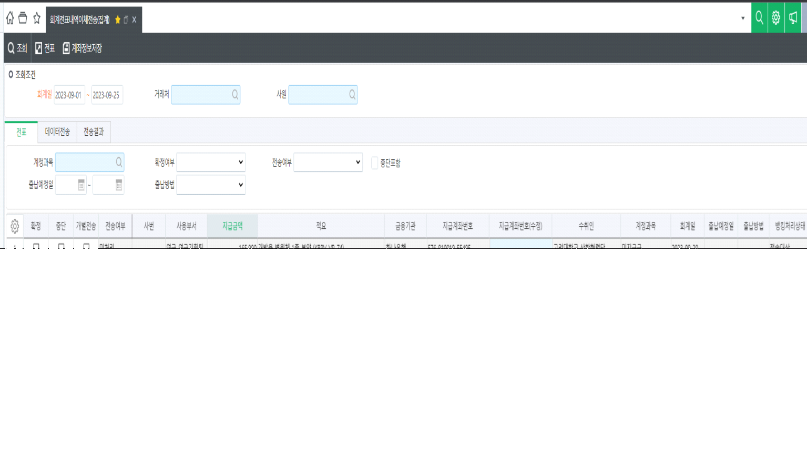

※ ITGC 적용 스펙입니다. 테스트DB에만 적용 후 작성자와 상의 후 실DB에 적용하세요! ※
안녕하세요. 시스웨어 김현욱입니다.
회계내역이체전송(집계)화면에서 자금지출일지에서 생성된 출금전표만 조회되도록 적용 부탁드립니다.
일반분개전표는 조회되지 않도록 수정 붙가드립니다.
(대체서비스 생성되어 있습니다.)

확인 부탁드립니다.
감사합니다.
출처: \<http://61.250.183.6:8100/Page/Open/44573/100101/0/18820244>